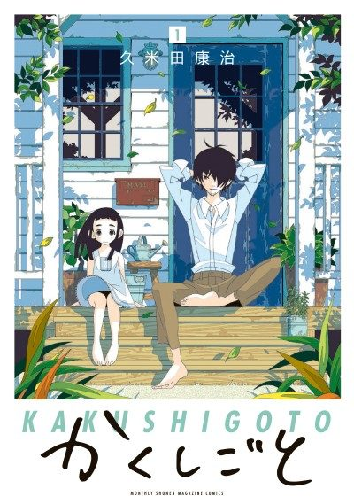

Kakushigoto
かくしごと
Kakushi is a manga artist who draws dirty comics, and does everything he can to hide it from his young daughter Hime.
The anime covers the whole manga.
7.8AniList score
—Animeter, no votes yet
12episodes
Rate it or report where you stopped
Anime finished. Where does the manga pick up?
StatusFully adapted
The anime finale adapts the end of the manga's final (12th) volume, so the story is complete. The anime skips much of volumes 2-10, so reading from chapter 1 gives the skipped material.
More like Kakushigoto
 Film8.6
Film8.6
 Original8.1
Original8.1
 Manga Mission 888.3
Manga Mission 888.3
 Done7.9
Done7.9
 Manga Ch. 1078.4
Manga Ch. 1078.4
 Original7.7
Original7.7
 Manga Ch. 488.0
Manga Ch. 488.0
 Manga Ch. 618.1
Manga Ch. 618.1
 Manga Ch. 1077.7
Manga Ch. 1077.7
 Film8.3
Film8.3
 Film8.2
Film8.2
 Manga Ch. 777.3
Manga Ch. 777.3